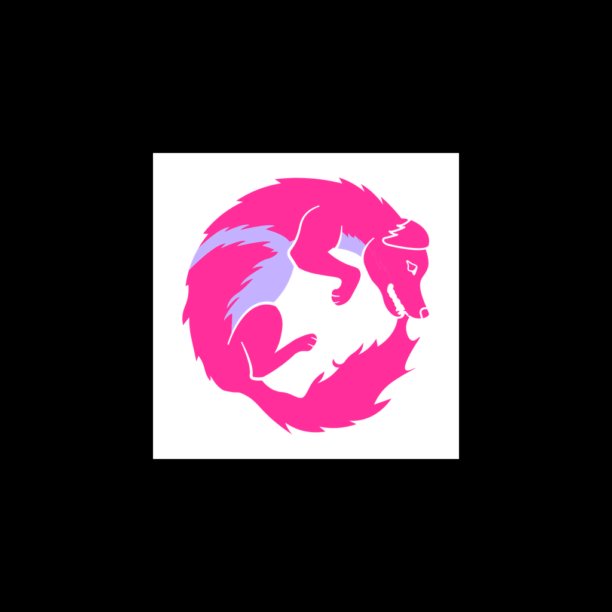

lycan dice:
¿Tendrá razón? Pruébalo.
programa.py
lycan dice:
¿Tendrá razón? Pruébalo.
// realidad aumentada
Imprime la tarjeta, o ábrela en otra pantalla, y ponla sobre la mesa. Apunta la cámara al cuadro negro: la ciudad del nivel aparece encima, en 3D, y el carrito anda por ella con tu programa.

La imagen de la cámara se queda en tu equipo: no se graba ni se envía.